Nền tảng kiến thức
Duy trì việc học đều đặn, hiểu chắc các khái niệm cốt lõi và biết kết nối kiến thức với những tình huống học tập thực tế.
Digital Portfolio
“Giữa những ngày học tập nhiều sắc màu, mình chọn lưu lại hành trình trưởng thành bằng sự dịu dàng, tò mò và một trái tim luôn muốn học thêm những điều mới.”
Sinh viên ngành Khoa học giáo dục và khác tại Đại học Giáo dục - ĐHQGHN, đang từng bước xây dựng một hành trình học tập mềm mại, có mục tiêu và giàu cảm hứng.
Giới thiệu
Em là Lê Hoài An, sinh viên ngành Khoa học giáo dục và khác tại Đại học Giáo dục - ĐHQGHN. Portfolio này được xây dựng như một nơi lưu lại quá trình học tập, những mục tiêu đang theo đuổi và cách em nhìn về tương lai trong lĩnh vực giáo dục.
Em mong muốn học tập bằng sự tò mò, biết lắng nghe và luôn giữ tinh thần dịu dàng với bản thân. Mỗi bài học, mỗi kỹ năng mới đều là một mảnh ghép nhỏ giúp em hiểu hơn về giáo dục và về người học.
Mục tiêu học tập
Em mong muốn xây dựng nền tảng kiến thức vững chắc trong lĩnh vực khoa học giáo dục, đồng thời rèn luyện tư duy phản biện, kỹ năng nghiên cứu và khả năng ứng dụng công nghệ vào học tập.
Duy trì việc học đều đặn, hiểu chắc các khái niệm cốt lõi và biết kết nối kiến thức với những tình huống học tập thực tế.
Tập đặt câu hỏi, nhìn vấn đề từ nhiều góc độ và đánh giá thông tin một cách cẩn trọng trước khi đưa ra nhận định.
Rèn cách tìm kiếm tài liệu, tổng hợp thông tin, trình bày kết quả học tập rõ ràng và có căn cứ.
Chủ động tham gia hoạt động học thuật, phát triển kỹ năng mềm và ứng dụng công nghệ để chuẩn bị cho công việc tương lai.
Sở thích
Nghe nhạc và xem phim là hai sở thích giúp em cân bằng cảm xúc, nghỉ ngơi nhẹ nhàng và có thêm cảm hứng quan sát con người, câu chuyện và cách mỗi người học hỏi từ cuộc sống.
Một cách nhỏ để làm dịu nhịp ngày, sắp xếp lại suy nghĩ và giữ cho việc học có thêm màu sắc.
Một khoảng thời gian để lắng nghe câu chuyện, quan sát cảm xúc và mở rộng góc nhìn về con người.
Định hướng cá nhân
Trong tương lai, em định hướng trở thành một người làm việc trong lĩnh vực giáo dục có tư duy sáng tạo, biết lắng nghe và luôn đổi mới.
Em mong muốn góp phần xây dựng môi trường học tập tích cực, gần gũi và truyền cảm hứng cho người học.
Em muốn tiếp tục học ngoại ngữ, công nghệ và rèn các kỹ năng giao tiếp, tổ chức để chuẩn bị tốt hơn cho hành trình nghề nghiệp.
Minh bạch học tập
Portfolio chỉ sử dụng thông tin cá nhân đã được cung cấp và các tài liệu học tập hợp lệ trong project. Những dữ liệu chưa có như mã sinh viên, email, số điện thoại, lớp hoặc ảnh cá nhân không được tự suy diễn và không đưa vào giao diện.
Minh chứng học tập
Các minh chứng dưới đây được render từ PDF đã được cập nhật trong Bài 1 đến Bài 6. Mỗi bài có ảnh trang tiêu biểu và liên kết PDF đầy đủ để người xem có thể theo dõi sản phẩm học tập.
Mục tiêu: Rèn thao tác cơ bản với tệp tin và thư mục, biết cách tổ chức dữ liệu học tập khoa học.
Kỹ năng: Quản lý tài liệu, đặt tên rõ ràng, thao tác xóa, khôi phục và lưu trữ có hệ thống.
Mục tiêu: Luyện kỹ năng tìm kiếm, chọn lọc và đánh giá độ tin cậy của nguồn học thuật.
Kỹ năng: Xây dựng chiến lược tìm kiếm, đọc nguồn, so sánh tài liệu và tổng hợp nhận xét có căn cứ.
Trang 1, 2, 4
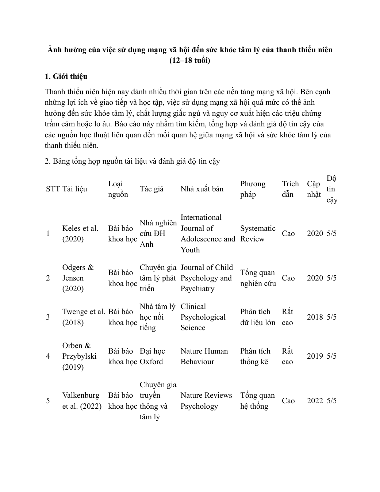
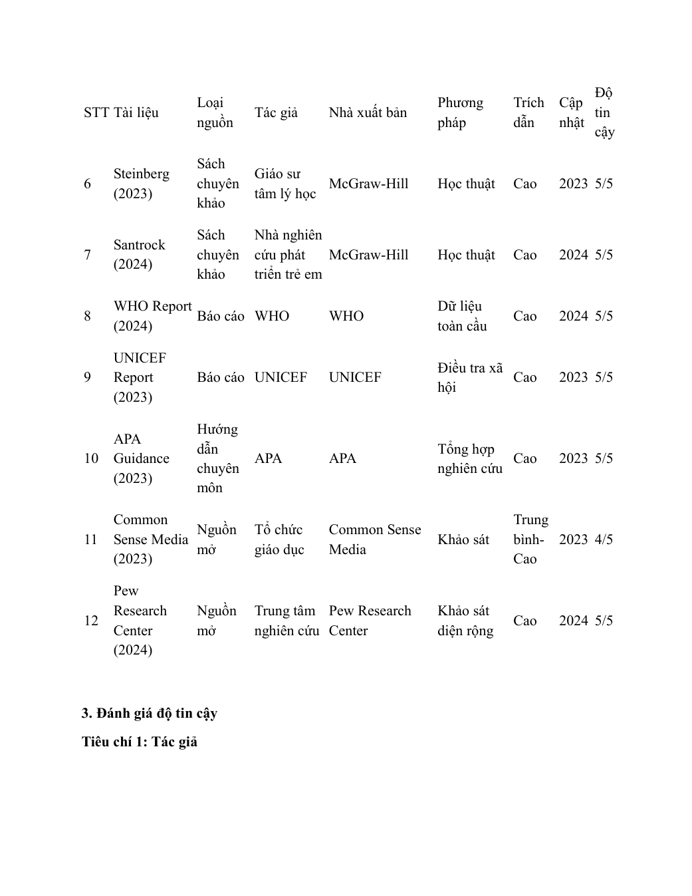
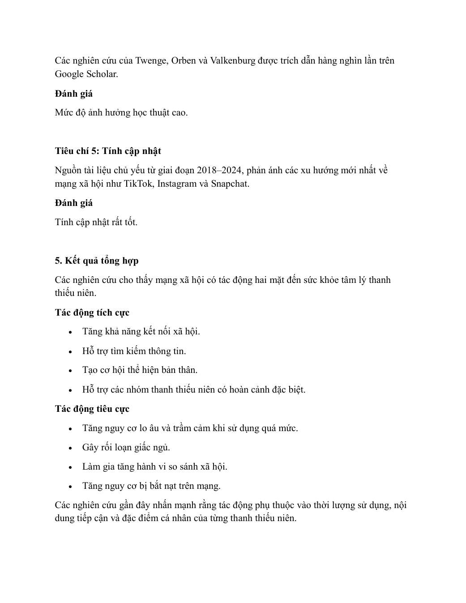
Mục tiêu: Hiểu cách thiết kế prompt rõ bối cảnh, vai trò, định dạng và tiêu chí đánh giá.
Kỹ năng: Đặt câu hỏi có cấu trúc, thử nghiệm phản hồi AI, so sánh kết quả và cải tiến cách học.
Trang 1, 5, 8
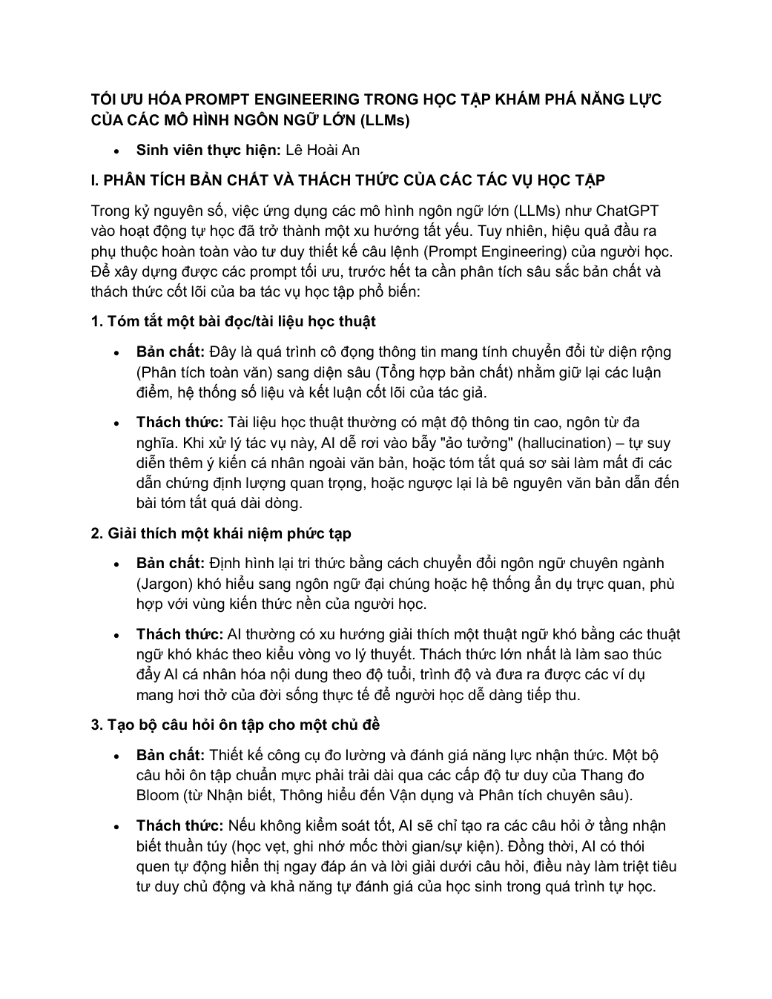
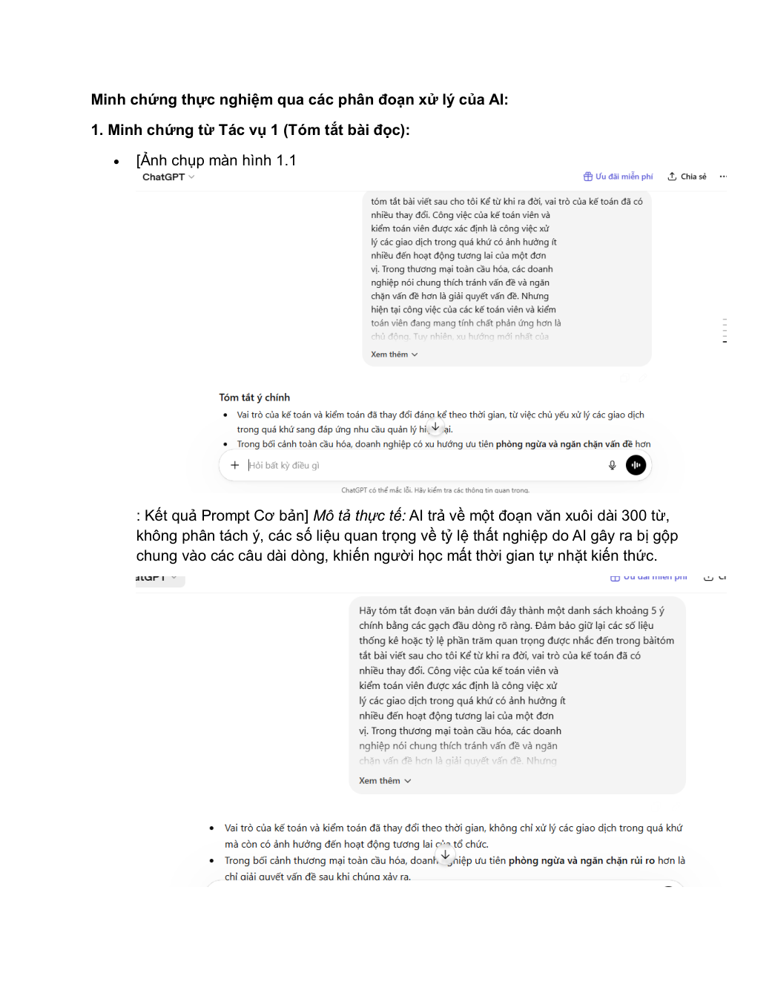
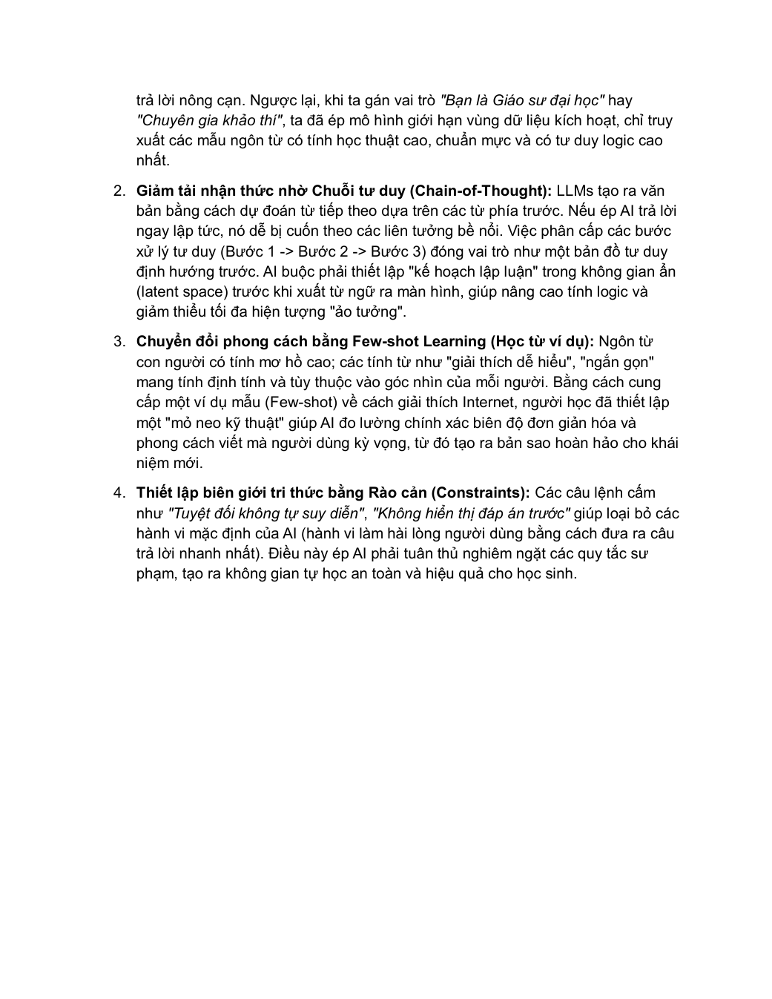
Mục tiêu: Rèn kỹ năng tổ chức họp trực tuyến, phối hợp nhóm và thống nhất nhiệm vụ trong môi trường số.
Kỹ năng: Giao tiếp số, theo dõi tiến độ, ghi nhận kết quả thảo luận và rút kinh nghiệm sau hoạt động nhóm.
Mục tiêu: Sử dụng AI tạo sinh để hỗ trợ lên ý tưởng, tạo nội dung và hoàn thiện sản phẩm số.
Kỹ năng: Viết prompt, đánh giá đầu ra AI, chỉnh sửa nội dung và trình bày sản phẩm học tập bằng công cụ số.
Trang 1, 3, 6
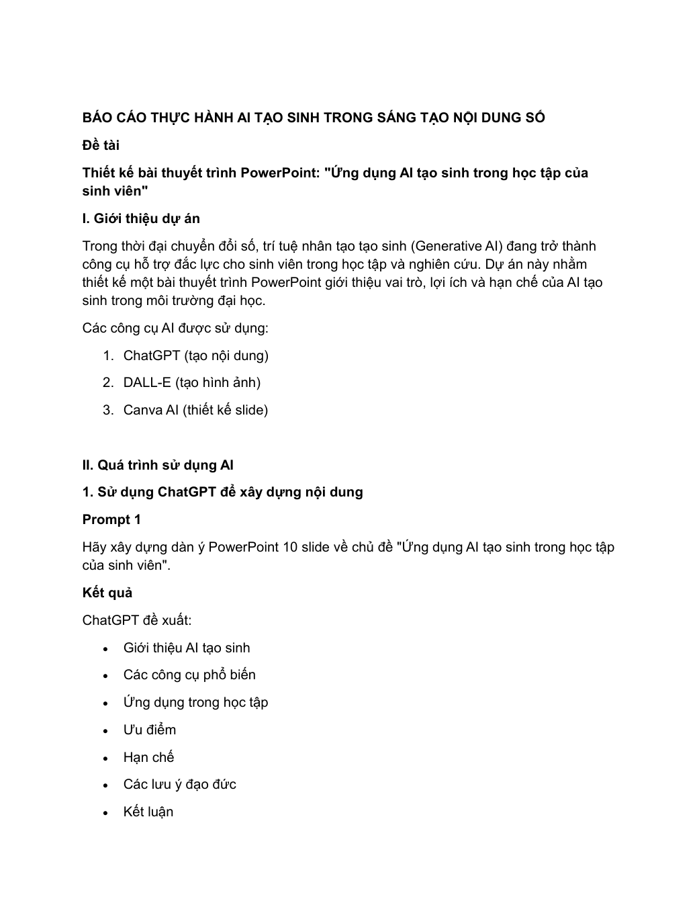
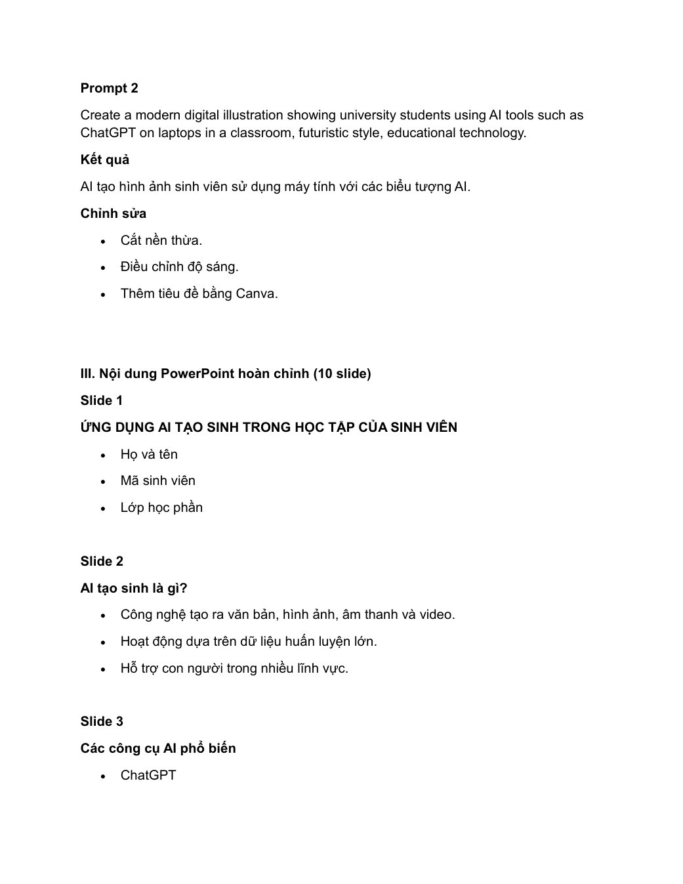
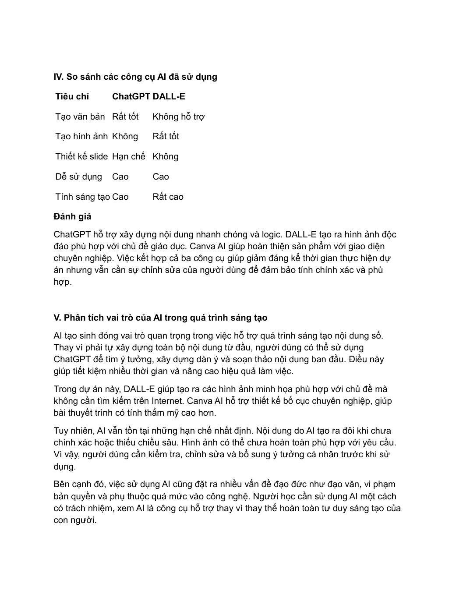
Mục tiêu: Nhận diện rủi ro khi dùng AI và xây dựng nguyên tắc cá nhân để giữ liêm chính học thuật.
Kỹ năng: Kiểm chứng thông tin, phân biệt hỗ trợ hợp lý với gian lận và sử dụng AI minh bạch.
Trang 1, 4, 5
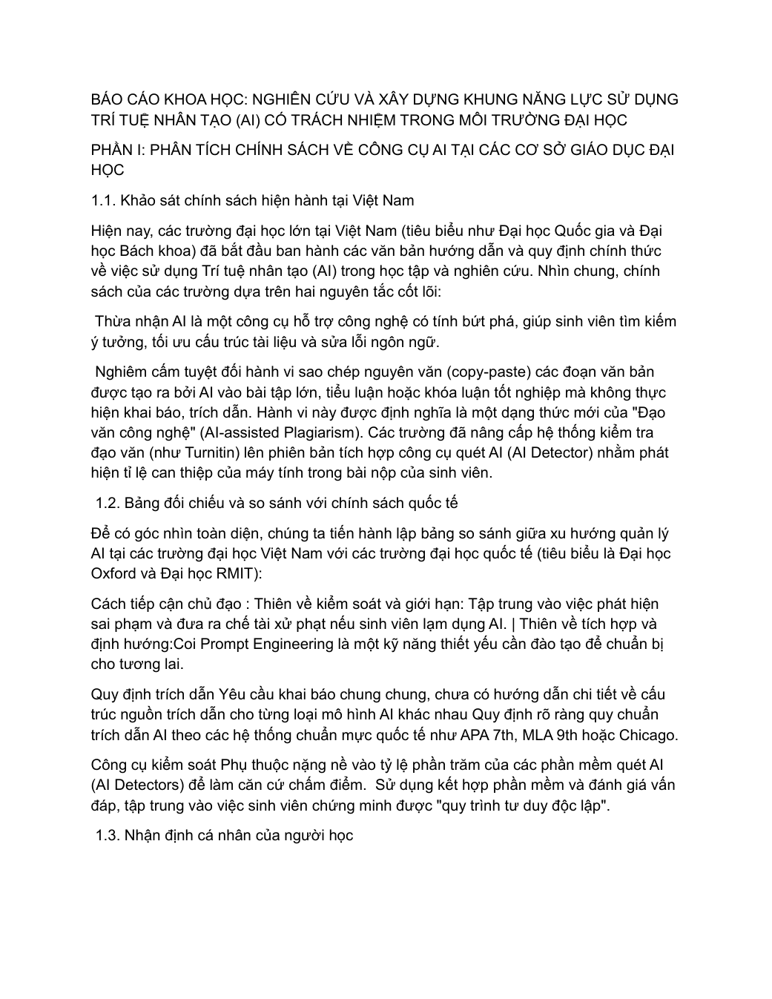
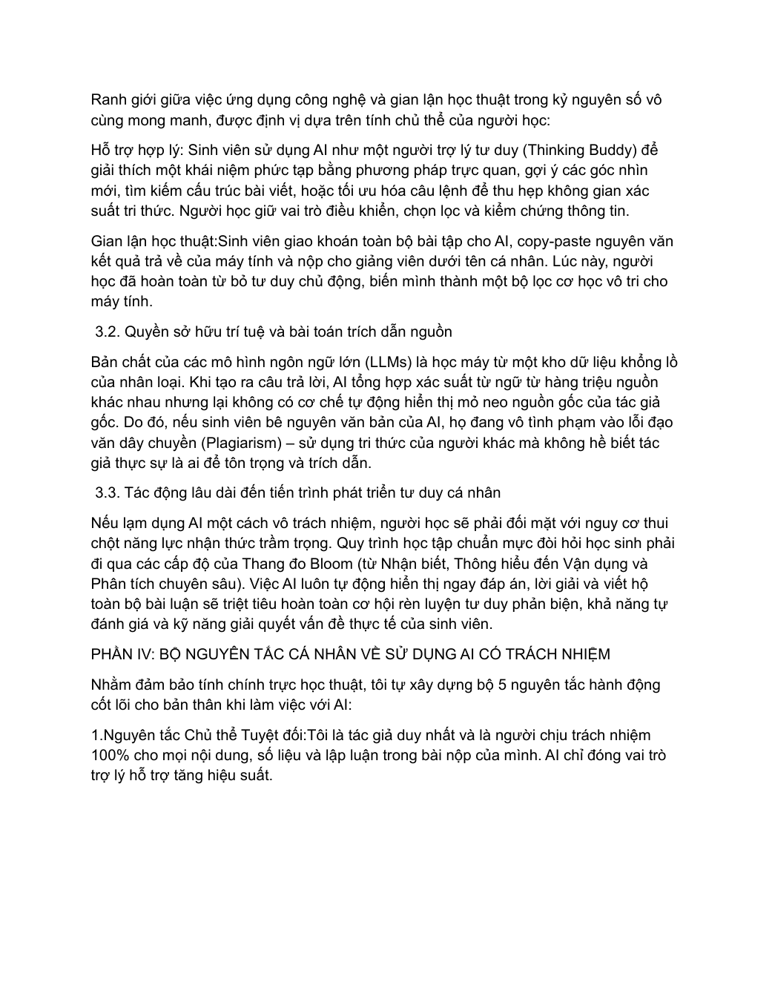
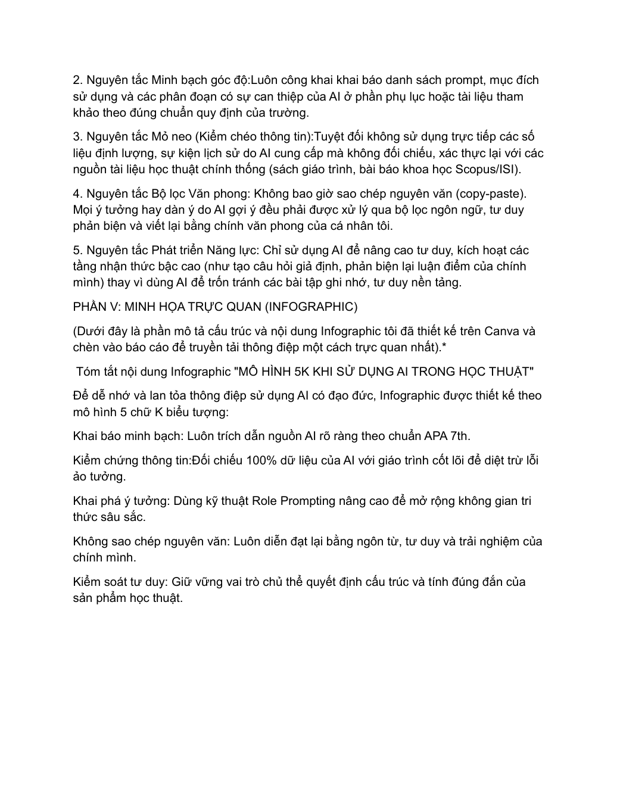
Lời kết
Portfolio này ghi lại định hướng của Lê Hoài An: học chắc nền tảng khoa học giáo dục, rèn tư duy phản biện và kỹ năng nghiên cứu, ứng dụng công nghệ vào học tập và từng bước trở thành một người làm giáo dục sáng tạo, biết lắng nghe, luôn đổi mới.